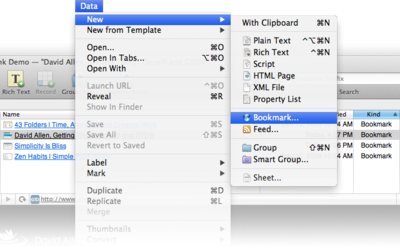

|
|
Manage your bookmarks |
|
With its integrated, document-based web browser, DEVONthink Pro Office can be used as a bookmark manager. Organize all your bookmarks as bookmark documents and visit the website simply by selecting the bookmark in split or three panes view. DEVONthink Pro Office loads the page and displays it in the view/edit pane.  If you want to open the Web page in your default browser, simply ⌃ click (right-click) the bookmark and choose Launch URL from the contextual menu. Possible uses:
Continue to read here: |